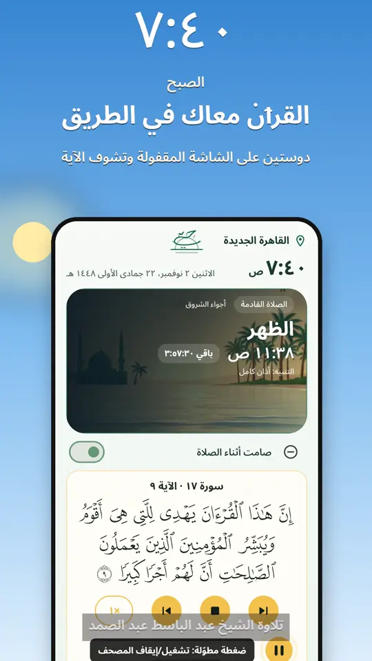
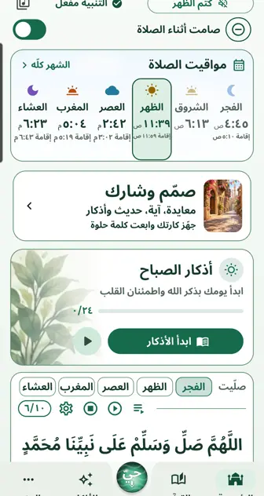
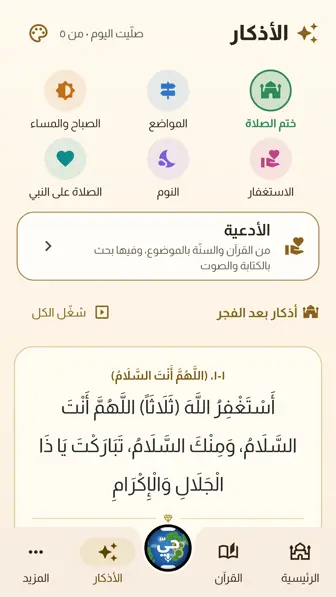
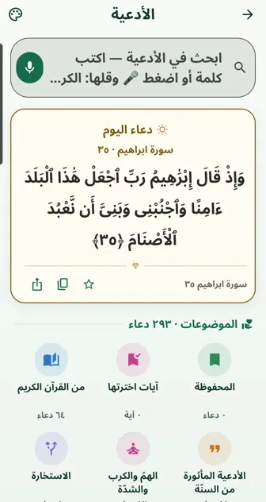
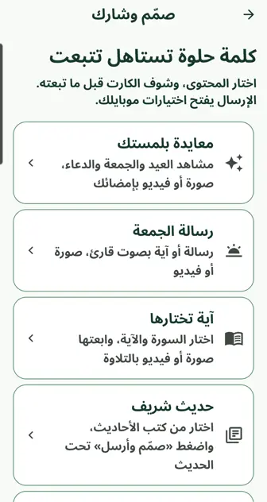

حيّ
مواقيت الصلاة والأذان والأذكار والقرآن، ماشي مع يومك.
مجاني، بلا إعلانات ولا حساب ولا تتبّع.
نزّل «حيّ» لأندرويد
من جوّه البرنامج




فيه إيه
- الأذان في وقتهبأصوات مشايخ، والفجر بـ«الصلاة خير من النوم»، وصامت وقت الصلاة.
- المصحفالصفحة المطبوعة، والتلاوة آية بآية، و«اتبعني» وإنت بتقرا.
- الأذكار والأدعيةالصباح والمساء والسبحة، ودعاء جديد كل ما تفتح.
- صمّم وشاركمعايدة العيد والجمعة بمشهد مرسوم، صورة أو فيديو.
- بصوتكقول «شغّل سورة الكهف» أو «أدعية الكرب» وهو يفتحها.
- رمضان والأعيادشكل رمضاني، والسحور والإفطار، وتكبيرات العيد.
إزاي تنزّله
- اضغط «نزّل» فوق، هيفتح المتصفح.
- لو سأل، اضغط «التنزيل على أي حال».
- لما التنزيل يخلص اضغط «فتح»، وبعدين «تثبيت».
- أول مرة بس: لو طلب «السماح من هذا المصدر»، فعّله وارجع كمّل.
الخطوات بالصور، من أول التنزيل لحد ما يفتح ←
قريب على Google Play إن شاء الله، ووقتها الزرار ده هيوديك هناك على طول.